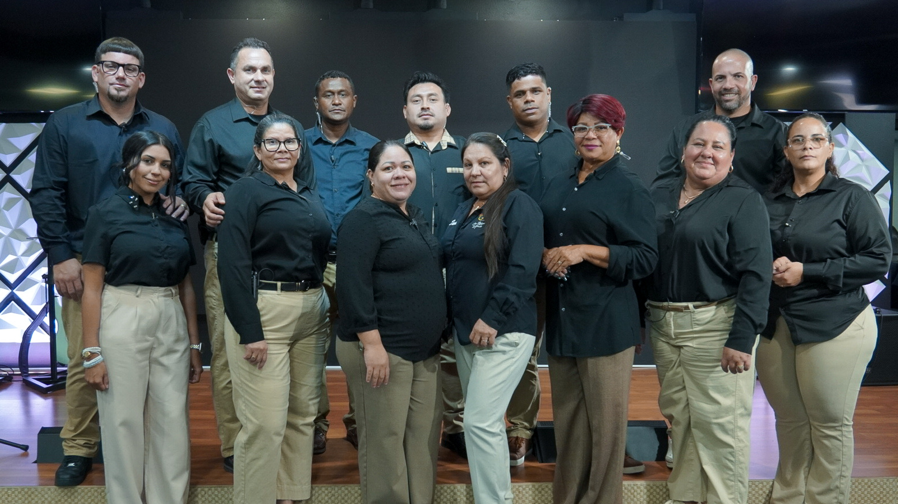
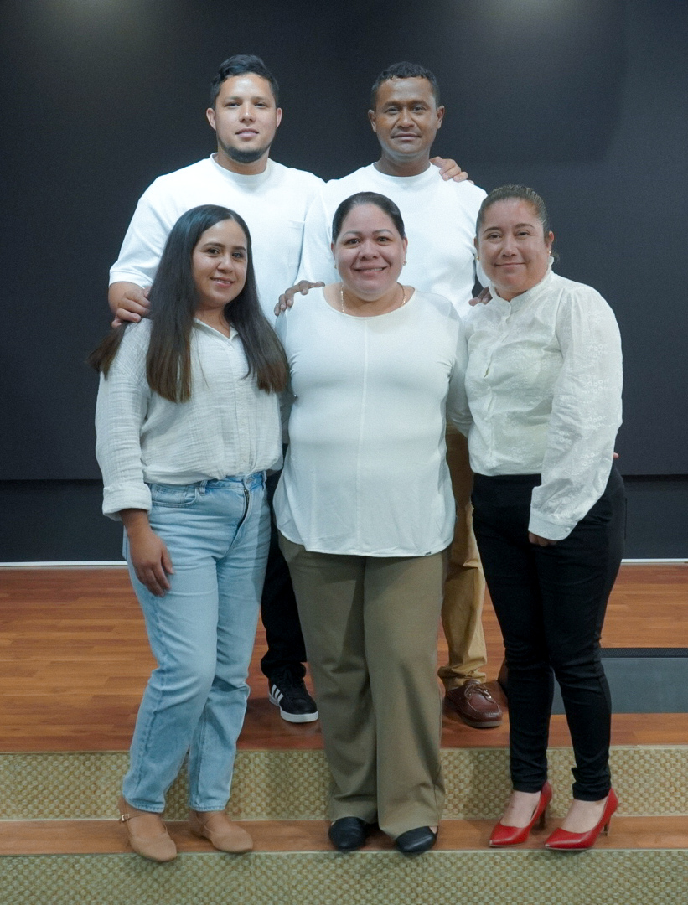
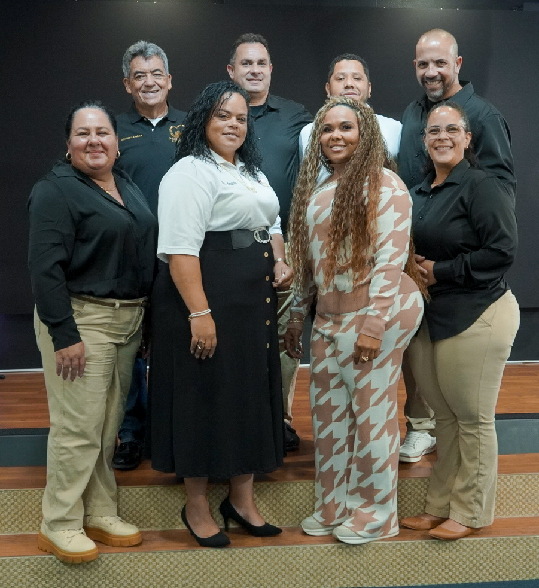

Cada persona tiene un lugar para servir, crecer y amar.

El Ministerio de Adoración es una familia unida por el amor a Dios y el deseo de servirle con excelencia. Nuestro propósito es guiar a la congregación en una alabanza en Espíritu y Verdad, creando un ambiente donde cada persona pueda encontrarse con la presencia de Dios y rendirle toda la gloria y la honra.

Juventud Sin Límites (JSL) es un ministerio dedicado a formar una generación apasionada por Cristo, ayudando a los jóvenes a crecer en su relación con Dios y a descubrir su propósito. A través de tiempos de oración, adoración, enseñanza bíblica, dinámicas, actividades y ministración, buscamos que cada joven fortalezca su fe y desarrolle un carácter conforme al corazón de Dios. También fomentamos el compañerismo, el servicio y la responsabilidad, creando un ambiente seguro donde cada joven pueda crecer, servir y vivir sin límites para Cristo.

El Ministerio Semillas del Reino tiene el propósito de enseñar a los niños la Palabra de Dios de una manera dinámica, sencilla y adecuada para su edad. Durante cada servicio, ofrecemos un ambiente seguro y lleno de amor donde los niños pueden aprender principios bíblicos, crecer en su fe y desarrollar una relación personal con Jesús. Nuestro deseo es sembrar en cada corazón la semilla del evangelio para formar una generación que ame y siga a Cristo desde temprana edad.

El Ministerio de Damas tiene la misión de levantar, restaurar y sanar a las mujeres por medio del amor de Dios, la oración y Su Palabra. Buscamos fortalecer su comunión con el Señor, restaurar familias y ayudar a sanar heridas emocionales para que cada mujer pueda vivir la transformación de Cristo. A través de reuniones, acompañamiento y tiempos de oración, nuestro deseo es que las mujeres restauradas también alcancen y bendigan a otras que necesitan esperanza y el amor de Dios.

El Ministerio de Caballeros tiene el propósito de levantar hombres conforme al corazón de Dios, fortaleciendo su identidad, liderazgo y responsabilidad como sacerdotes del hogar. A través de enseñanzas, dinámicas, tiempos de confraternización, retiros y campamentos, buscamos equipar a cada hombre para vivir como un verdadero hombre de Reino y servir con fidelidad a Dios, su familia y la iglesia.

El Ministerio Refugiando Corazones tiene la misión de llevar el mensaje de salvación de Jesucristo a niños, jóvenes y adultos. Compartimos el evangelio en parques, plazas, calles y otros lugares públicos por medio de la oración, la adoración, la Palabra de Dios y el llamado al arrepentimiento, invitando a cada persona a conocer a Cristo y formar parte de nuestra familia en Casa Refugio de Amor. También servimos a nuestra comunidad con actividades para niños y recibimos con amor a quienes llegan a nuestra iglesia, orando por ellos y proclamando que Cristo vive y les ama.

El Ministerio de Intercesión tiene como misión orar fervientemente por las necesidades de las personas, la iglesia, nuestros pastores, líderes, ministerios y cada actividad de Casa Refugio de Amor. Nos dedicamos a buscar la dirección y el poder de Dios a través de la oración, creyendo que la intercesión fortalece a la iglesia y transforma vidas. Nos reunimos el primer y tercer martes de cada mes para un tiempo especial de oración e intercesión.

El Ministerio de Media tiene como propósito servir con excelencia en las áreas de audio, video, fotografía y proyección, llevando el mensaje de Cristo con claridad tanto a quienes nos acompañan en el templo como a quienes nos siguen en línea. Nuestro equipo está compuesto por operadores de computadora, fotógrafos, camarógrafos e ingenieros de sonido que trabajan juntos para crear una experiencia de adoración organizada, visualmente atractiva y con una excelente calidad de audio, reflejando siempre la excelencia para la gloria de Dios. Equipos dentro de Media consisten en Operador de ProPresenter, Fotografia, Operador de Live Camera, y Sonidista.

Café con Amor es el ministerio de cocina de Casa Refugio de Amor, dedicado a preparar y servir alimentos con excelencia y amor. Cada domingo, nuestro equipo trabaja en conjunto para ofrecer comidas y bebidas a la congregación, manteniendo un ambiente acogedor, organizado y limpio. A través del servicio y la hospitalidad, buscamos reflejar el amor de Cristo en cada detalle.
El Ministerio Abriga un Homeless de Casa Refugio de Amor brinda alimento, ropa, artículos esenciales y esperanza a personas sin hogar. A través de actos de amor, servicio y compasión, salimos cada sábado a servir a nuestra comunidad y realizamos eventos especiales durante el año para alcanzar a más personas necesitadas. Nuestro compromiso es compartir el amor de Cristo, llevando ayuda práctica y esperanza a quienes más lo necesitan.

Un ministerio dedicado a recibir, orientar y servir a cada persona que llega a nuestra iglesia, creando un ambiente de amor y bienvenida.

El Ministerio Misiones de Amor tiene como propósito extender el Reino de Dios brindando apoyo a misiones, iglesias hijas, pastores y personas con necesidades específicas. A través de ayuda financiera, recaudaciones de fondos y diferentes iniciativas, servimos a familias, niños y comunidades donde Dios nos guía, llevando amor, esperanza y apoyo práctico para cumplir la obra del Señor.

El Ministerio de Mantenimiento se encarga de cuidar y conservar las instalaciones de Casa Refugio de Amor. Nuestro equipo trabaja para mantener el templo limpio, seguro y en óptimas condiciones, realizando labores de limpieza, organización y mantenimiento preventivo. A través de este servicio, preparamos un ambiente digno y acogedor para que cada persona pueda congregarse y adorar al Señor con comodidad.

El Ministerio Yobel adora a Dios a través de la danza, expresando el mensaje que Él pone en nuestros corazones. Cada paso, movimiento y vestuario tiene el propósito de glorificar a Cristo y establecer Su Reino, recordando que toda la honra y toda la gloria siempre le pertenecen a Él. Nuestro anhelo es inspirar a la congregación a adorar a Dios con libertad, pasión y un corazón rendido a Su presencia.

El Ministerio Oasis de Amor tiene el propósito de compartir el amor de Cristo sirviendo a nuestra comunidad y extendiendo una mano de ayuda a quienes más lo necesitan. A través de la distribución de alimentos y actos de compasión, buscamos bendecir a familias y personas en necesidad, demostrando el amor de Dios de una manera práctica. Nuestro deseo es que cada entrega sea una oportunidad para llevar esperanza, oración y el mensaje del evangelio, reflejando el corazón de Cristo.